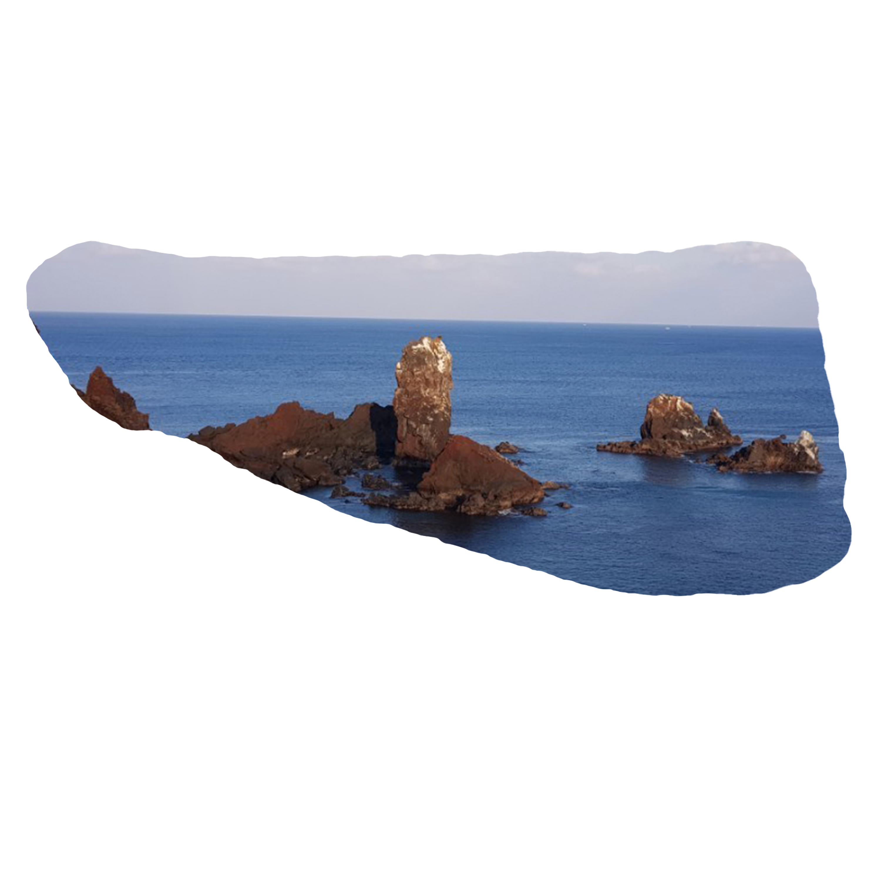

오름돌 고사리

Oreum Stone Bracken
곶자왈에서 만난 고사리의 색, 오름돌 고사리
곶자왈은 화산활동 중 분출한 용암류가 만들어낸 불규칙한 암괴지대로 숲과 덤불 등 다양한 식생을 이루는 곳을 말하며,
암괴들이 불규칙하게 널려있는 지대에 형성된 숲으로, 다양한 동·식물이 공존하며 독특한 생태계가 유지되고 있는 지역을 말합니다.
암괴들이 불규칙하게 널려있는 지대에 형성된 숲으로, 다양한 동·식물이 공존하며 독특한 생태계가 유지되고 있는 지역을 말합니다.
제주 곶자왈
고사리
환경의 가치가 중요시 되고 있는 현재
자연생태계가 잘 보존되어 있어 자연자원과
생태계 보전가치가 높은 지역이 되었습니다.
자연생태계가 잘 보존되어 있어 자연자원과
생태계 보전가치가 높은 지역이 되었습니다.
고사리 새순이 올라올 때 말린 모습과
실 같은 하얀 것이 식물체에 붙어 있는
모습을 차용해 고사리가 되었습니다.
실 같은 하얀 것이 식물체에 붙어 있는
모습을 차용해 고사리가 되었습니다.
화산돌

Magma Stone
화산 섬, 제주를 상징하는 ‘현무암’의 모티브로 했습니다.
화산섬은 해저 화산이 폭발하면서 솟아나온 용암과 화산재 등이 쌓이면서 생겨난 섬을 말합니다.
그 중 3개의 지역이 세계유산으로 지정되어 그 가치를 인정받고 있습니다.
그 중 3개의 지역이 세계유산으로 지정되어 그 가치를 인정받고 있습니다.
현무암
화산섬
현무암은 분출암으로 해양 지각의
대부분을 구성하며 제주도에서 가장
넓게 분포하고 있습니다.
대부분을 구성하며 제주도에서 가장
넓게 분포하고 있습니다.
제주도는 평면적으로는 타원형이며,
입체적으로는 원추형의 모습을 띈
용암류로 뒤덮힌 화산섬입니다.
입체적으로는 원추형의 모습을 띈
용암류로 뒤덮힌 화산섬입니다.
오름돌 바다

Oreum Stone Sea
어느 쪽으로 가도 그 끝에는 바다가 있는 섬의 색, 오름돌 바다
제주도는 대륙과 해양을 연결하는 요충지이며
천혜의 자연경관이 수려한 세계적인 휴양관광지로 알려져 있습니다.
천혜의 자연경관이 수려한 세계적인 휴양관광지로 알려져 있습니다.
제주바다
색색의 바다
제주바다는 해양생태계의 장단기 변동을
파악하며 해양을 이용하고 관리하는데 있어
과학적 자료로 활용됩니다.
파악하며 해양을 이용하고 관리하는데 있어
과학적 자료로 활용됩니다.
흑색의 돌과 모래는 제주도 생성 당시
화산활동으로 남겨진 화산암과 용암돌로
검은 해변을 볼 수 있습니다.
화산활동으로 남겨진 화산암과 용암돌로
검은 해변을 볼 수 있습니다.
듬돌

Tough Stone
듬돌문화, 제주의 힘자랑 문화를 모티브로 했습니다.
듬돌은 힘을 기르거나 힘겨루기를 위해 들었던 돌입니다.
듬돌은 그 단순한 외형과 다르게 다양한 기능과 의미를 가지고 있습니다.
듬돌은 그 단순한 외형과 다르게 다양한 기능과 의미를 가지고 있습니다.
듬돌들기 문화
듬돌 들어올리기
신체를 단련시키고 힘을 겨룰뿐만 아니라,
마을과 마을 사이의 힘을 과시하는
저울대 역할도 한 민속유물입니다.
마을과 마을 사이의 힘을 과시하는
저울대 역할도 한 민속유물입니다.
두 손으로만 들기, 가슴에 붙여 들기 등
다양한 방법으로 듬돌을 들어올려 자신의
힘을 가늠하는 문화로 자리잡았습니다.
다양한 방법으로 듬돌을 들어올려 자신의
힘을 가늠하는 문화로 자리잡았습니다.
오름돌 송이

Oreum Stone
오름을 굴러다니는 돌, ‘송이’를 모티브로 했습니다.
제주 오름 등에서 흔히 볼 수 있는 화산송이는 제주어로 화산분출물을 말합니다.
화학적, 물리적으로 이점이 많아 제주도 특별법으로 보존자원으로 분류되어 있습니다.
화학적, 물리적으로 이점이 많아 제주도 특별법으로 보존자원으로 분류되어 있습니다.
송이가 만들어지는 과정
송이의 효능
화산폭발 당시 가스와 뒤섞인 용암이
먼저 분출되는 과정에서 다공질 구조의
화산석송이가 탄생하게 됩니다.
먼저 분출되는 과정에서 다공질 구조의
화산석송이가 탄생하게 됩니다.
화산석송이 자체가 참나무 숯과 같은
강력한 천연 흡착력과 살균력,
원적외선 방출 능력을 갖고 있습니다.
강력한 천연 흡착력과 살균력,
원적외선 방출 능력을 갖고 있습니다.
오름돌 모래

Oreum Stone Sand Beige
금능해변의 파도가 자꾸만 감추려던 색, 오름돌 모래
금능해변은 파란 물감을 풀어놓은 것 같은 에메랄드 빛깔을 띠고 있고
생김새가 귀여운 비양도, 촉감이 부드러운 백사장을 가지고 있습니다.
생김새가 귀여운 비양도, 촉감이 부드러운 백사장을 가지고 있습니다.
금능해변
은빛모래
이국적인 풍경을 가진 금능해변은,
서쪽에서 가장 유명한 해변인
협재해수욕장과 바로 이어져있습니다.
서쪽에서 가장 유명한 해변인
협재해수욕장과 바로 이어져있습니다.
물이 빠지는 간조 시간에 맞춰 가면
바닷물이 멀리까지 빠지기 때문에
넓고 고운 모래사장을 볼 수 있습니다.
바닷물이 멀리까지 빠지기 때문에
넓고 고운 모래사장을 볼 수 있습니다.
오름돌 감귤

Oreum Stone Tangerine
한경면 어느 감귤밭에서 훔쳐 온 색, 오름돌 감귤
귤은 따뜻한 지역에서 주로 재배되는 과일입니다.
귤을 재배하는 곳은 일교차가 작고 일조량이 많아야 하며, 배수가 잘 되는 땅이어야 합니다.
귤을 재배하는 곳은 일교차가 작고 일조량이 많아야 하며, 배수가 잘 되는 땅이어야 합니다.
귤의 다양한 종류
제주도에 귤이 많은 이유
감귤, 청견, 한라봉, 레드향, 천혜향,
진지향, 황금향 등 맛도 모양도 다양한
귤이 재배되고 있습니다.
진지향, 황금향 등 맛도 모양도 다양한
귤이 재배되고 있습니다.
1960년대 식량 증산 정책을 펼치면서,
당시 제주도는 식량 대신 수익성이
높은 감귤 재배를 장려했습니다.
당시 제주도는 식량 대신 수익성이
높은 감귤 재배를 장려했습니다.
선돌
Standing Stone

섭지코지의 슬픈 돌, ‘선돌바위’를 모티브로 했습니다.
섭지란 재사가 많이 배출되는 지세라는 뜻이며,
코지는 육지에서 바다로 톡 튀어나온 ‘곶’을 뜻하는 제주 방언입니다.
코지는 육지에서 바다로 톡 튀어나온 ‘곶’을 뜻하는 제주 방언입니다.
선돌바위 전설
사랑의 맹세
동해 용왕신의 막내 아들이 하늘에서
선녀가 내려오기만을 기다리다가
선채로 돌이 되어 버린 이야기입니다.
선녀가 내려오기만을 기다리다가
선채로 돌이 되어 버린 이야기입니다.
선돌 앞에서 사랑의 맹세를 하고
혼인을 하면 자녀를 얻을 수 있다는
선돌바위의 전설이 전해집니다.
혼인을 하면 자녀를 얻을 수 있다는
선돌바위의 전설이 전해집니다.